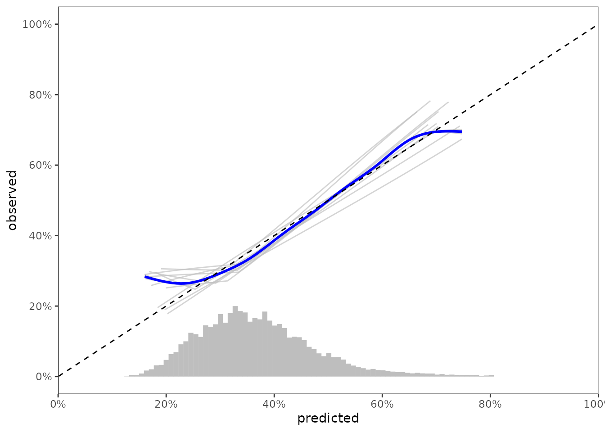

library(survival.calib)
library(survival)
library(riskRegression)
#> riskRegression version 2022.03.22
library(dplyr)
#>
#> Attaching package: 'dplyr'
#> The following objects are masked from 'package:stats':
#>
#> filter, lag
#> The following objects are masked from 'package:base':
#>
#> intersect, setdiff, setequal, union
library(tidyr)
library(ggplot2)
library(data.table)
#>
#> Attaching package: 'data.table'
#> The following objects are masked from 'package:dplyr':
#>
#> between, first, last
theme_set(theme_bw() + theme(panel.grid = element_blank()))
knitr::opts_chunk$set(fig.width=7, fig.height=5)For this example, we’ll use a standard dataset, survival::flchain, with some modifications:
we omit cases with missing values
# drop rows with missing values for simplicity
data_init <- na.omit(flchain)we remove the chapter variable.
# sometimes chapter makes split-sample tests tricky
data_init$chapter <- NULLLeaving us with a pretty clean initial data set
head(data_init)
#> age sex sample.yr kappa lambda flc.grp creatinine mgus futime death
#> 1 97 F 1997 5.70 4.860 10 1.7 0 85 1
#> 2 92 F 2000 0.87 0.683 1 0.9 0 1281 1
#> 3 94 F 1997 4.36 3.850 10 1.4 0 69 1
#> 4 92 F 1996 2.42 2.220 9 1.0 0 115 1
#> 5 93 F 1996 1.32 1.690 6 1.1 0 1039 1
#> 6 90 F 1997 2.01 1.860 9 1.0 0 1355 1
set.seed(7302016)
mccv_count <- 10
results <- vector(mode = 'list', length = mccv_count)
n_obs_total <- nrow(data_init)
n_obs_train <- round(n_obs_total * 1/2)
pred_horizon <- 1500
for(i in seq(mccv_count)){
train_index <- sample(n_obs_total, size = n_obs_train)
data_train <- data_init[train_index, ]
data_test <- data_init[-train_index, ]
model <- coxph(Surv(futime, death) ~ age + sex + sample.yr + flc.grp,
data = data_train,
x = TRUE)
predrisk <- predictRisk(model, newdata = data_test, times = pred_horizon)
results[[i]] <- predrisk %>%
scalib(pred_horizon = pred_horizon,
event_status = data_test$death,
event_time = data_test$futime) %>%
scalib_hare() %>%
scalib_gnd() %>%
as.data.table()
}
results <- rbindlist(results, idcol = '._iter_.')
results
#> ._iter_. ._id_. pred_horizon inputs outputs
#> 1: 1 pred_risk_1 1500 <data.table[981x3]> <data.table[1x11]>
#> 2: 2 pred_risk_1 1500 <data.table[981x3]> <data.table[1x11]>
#> 3: 3 pred_risk_1 1500 <data.table[981x3]> <data.table[1x11]>
#> 4: 4 pred_risk_1 1500 <data.table[981x3]> <data.table[1x11]>
#> 5: 5 pred_risk_1 1500 <data.table[981x3]> <data.table[1x11]>
#> 6: 6 pred_risk_1 1500 <data.table[981x3]> <data.table[1x11]>
#> 7: 7 pred_risk_1 1500 <data.table[981x3]> <data.table[1x11]>
#> 8: 8 pred_risk_1 1500 <data.table[981x3]> <data.table[1x11]>
#> 9: 9 pred_risk_1 1500 <data.table[981x3]> <data.table[1x11]>
#> 10: 10 pred_risk_1 1500 <data.table[981x3]> <data.table[1x11]>Don’t do this! The assumption of pooled chi-square tests is that the chi-square statistics are independent, but these chi-square statistics are correlated.
data_segment <- results %>%
select(._id_., inputs) %>%
unnest(inputs) %>%
pull(pred_risk) %>%
predrisk_bin_segments(bin_count = 75,
bin_length = 2)
data_calslope <- data_outputs %>%
select(._iter_., ._id_., hare_data_plot) %>%
unnest(hare_data_plot)
ggplot(data_calslope) +
aes(x = predicted, y = observed, group = ._iter_.) +
geom_line(col = 'grey', alpha = 2/3) +
geom_smooth(col = 'blue',
group = 1,
method = 'gam',
formula = y ~ s(x, bs = "cs")) +
geom_abline(col = 'black', linetype = 2, intercept = 0, slope = 1) +
scale_x_continuous(limits = c(0, 1),
expand = c(0, 0),
breaks = seq(0, 1, by = 0.2),
labels = paste0(seq(0, 100, by = 20),"%")) +
scale_y_continuous(limits = c(0, 1),
breaks = seq(0, 1, by = 0.2),
labels = paste0(seq(0, 100, by = 20),"%")) +
labs(color = 'Event status\nat t = 1,000') +
geom_segment(data = data_segment,
inherit.aes = FALSE,
size = 2,
color = 'grey',
mapping = aes(x = x,
y = y,
xend = xend,
yend = yend))